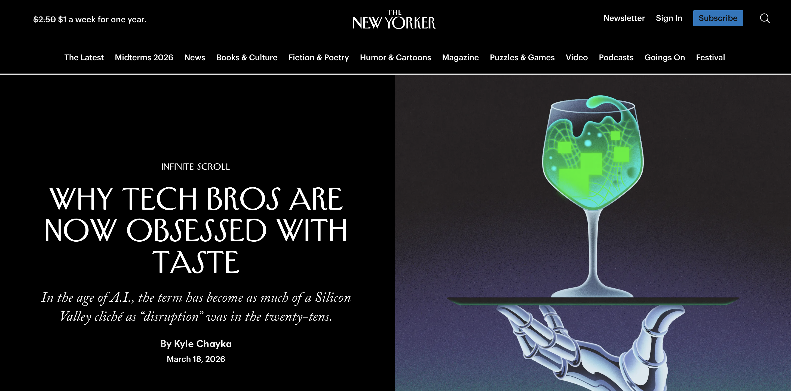
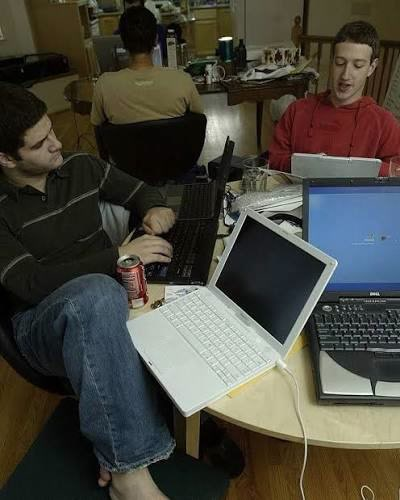
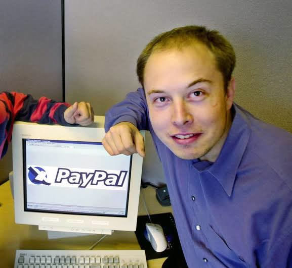

TASTE WASHING:
O SEU BOM GOSTO
É MESMO SEU?
(E O VILÃO ESCONDIDO NO SEU FEED)
O PIERRE BOURDIEU
CHAMADO A DISTINÇÃO,
GASTEI TODA A MINHA
BAGAGEM LITERÁRIA
MOSTROU QUE AQUILO
QUE A GENTE CHAMA
DE GOSTO PESSOAL,
O QUE QUER DIZER?
OU SEJA,
QUEM TEM MAIS ACESSO
DEFINE O QUE É BOM GOSTO
E TODO O RESTO
SÓ ABSORVE
SEM NEM PERCEBER
ENTÃO, MINHA QUERIDA,
MEU QUERIDO,
QUANDO VOCÊ FALA
QUE TEM BOM GOSTO,
O QUE VOCÊ TEM
A UM CERTO TIPO DE
INFORMAÇÃO REFERÊNCIA
E É EXATAMENTE AÍ
QUE O NOSSO FEED
ENTRA COMO
num
livro
de
1979
não
é
nada
pessoal.
é
CAPITAL
CULTURAL
essa
régua
lá
em
cima
na
verdade
é
acesso.
um
vilão
escondido
na
nossa
rotina.